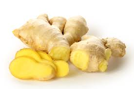
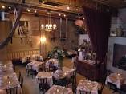
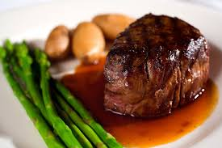
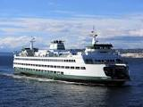
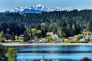
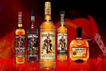

Welcome to Rudy's Awesome Seattle Restaurant Site
This is a site of Restaurants I like to eat at when I'm in the Seattle area
Rudy's Top 6 Seattle Restaurants
-

Wild Ginger
- Wild Ginger is by far the best Thai place in town, and one of the best ANYWHERE
-

The Pink Door
- You need to see this place to believe it. Great food. Even COOLER atmosphere
-

The Metropolitan Grill
- Best steak in town. Enough said
-

Ferry Noodle House
- The Ferry Noodle House is a cool little (and affordable) spot on the way to the Ferry Terminal
-

Cafe Nola
- Take the ferry over to Bainbridge Island and enjoy the view as well as some great food
-

Rudy's Place
- Rudy can't cook worth a damn, but his wife can. And Rudy mixes some POTENT cocktails
Table of recommended Dishes and Drinks - follow link from the suggested dish to the menu
Some kind of form to fill out below